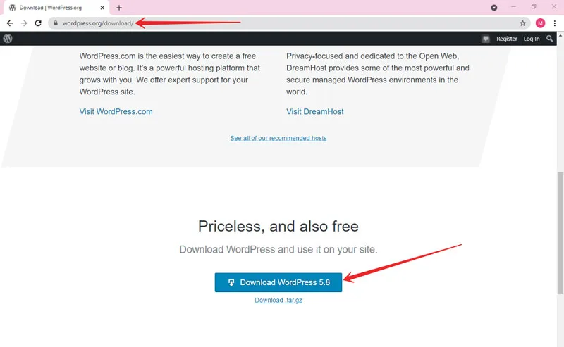

Step 1: Download and Extract Latest Version of WordPress from the internet.
To do this, you have to go to the WordPress.org website to Download WordPress. Open the link, scroll down the page, and click on the download WordPress button as shown in the image below.

1.2: After the downloading will complete, WordPress will be in a zip file. So go and extract it on your pc.